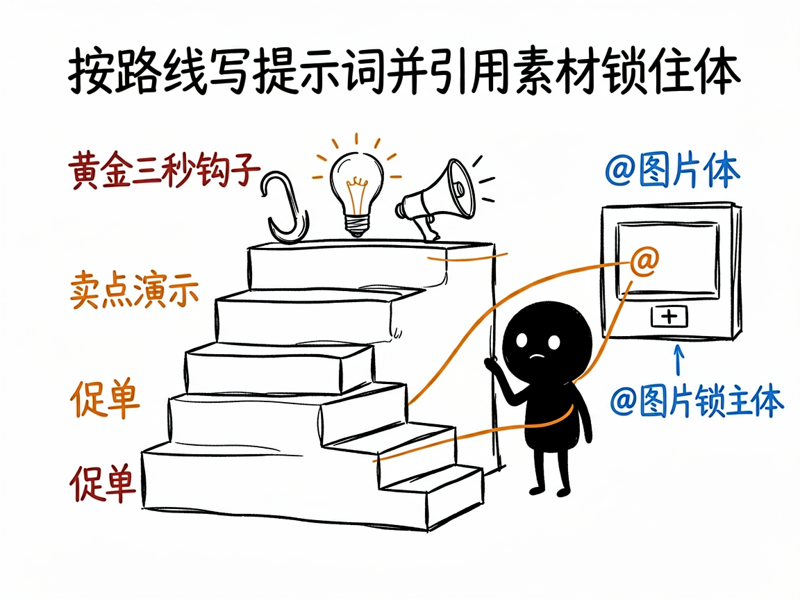

想用 AI 生成短视频，但不会写提示词？它帮你写出能用的分镜 —— make-prompt-seedance2 介绍
你听说即梦、豆包这些 AI 能直接把一句话变成视频，兴致冲冲试了，结果生成的不是你想要的：人物脸崩了、产品变形了、镜头乱跳。问题往往不在模型，而在你给的那句提示词太笼统。
make-prompt-seedance2 就是来解决这件事的。
你告诉它"我想做个什么视频"，它还你一份可以直接复制到即梦（Seedance 2.0，字节的 AI 视频模型）使用的完整分镜提示词。

它到底能做什么
- 先看懂你上传的参考图：产品长什么样、什么颜色材质，直接写进提示词，让 AI 生成更贴近原物。
- 自动判断你该走哪条路线：通用创意、抖音带货、品牌广告片、真人感探店、还是改已有的视频，各有不同写法。
- 带货视频会按"黄金 3 秒钩子 + 卖点演示 + 促单"的结构来写；广告片追求电影级质感；真人感路线专门做出"不像 AI"的手机随手拍效果。
- 支持引用素材语法：
@图片1 作为首帧、@视频1 参考运镜，把你的图/视频喂给模型锁住主体。 - 写好的提示词可直接粘贴到即梦、小云雀、豆包使用。

一个具体例子
你给它一张产品白底图，说"做个抖音带货视频"。它会分析图片、诊断卖点痛点，按五大模块（基础参数、镜头语言、核心主体、商业场景、强制约束）产出提示词，并告诉你上传图片的顺序和 @图片1 的对应关系。
谁适合用
- 想做 AI 短视频带货、种草、探店的电商人和博主。
- 需要做品牌广告片、产品展示的市场人员。
- 任何想用即梦/豆包生成视频、但被"怎么写提示词"卡住的人。
一点说明 / 小提示
它是一个跑在 AI 助手里的"提示词专家"技能，产出的是文字提示词，不是视频本身——视频要你拿去即梦等平台生成。注意它不支持写实的真人脸部素材。具体能力以项目文档为准。